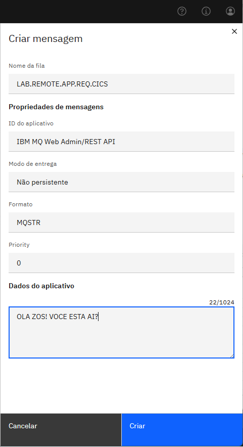
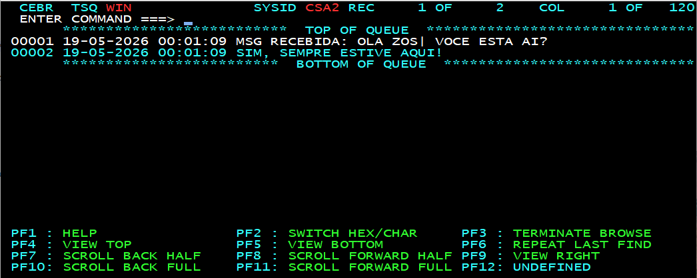
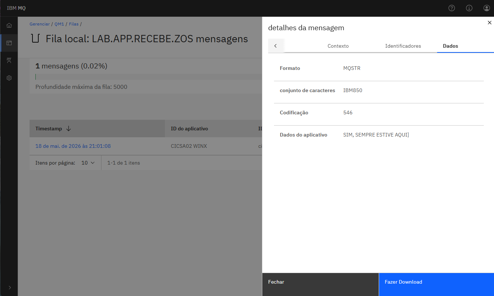

Autor: Diego Eduardo Moysés
*Observação: neste guia é utilizando o sistema operacional Windows para o x86 mas o mesmo pode ser aplicado para versão Linux.
DEFINE CHANNEL('CSQ7.TO.QM1') +
CHLTYPE(SDR) +
TRPTYPE(TCP) +
CONNAME('10.0.0.2(1415)') +
XMITQ('QM1.XMIT.QUEUE') +
REPLACE
DEFINE CHANNEL('QM1.TO.CSQ7') +
CHLTYPE(RCVR) +
TRPTYPE(TCP) +
REPLACE
DEFINE QLOCAL('QM1.XMIT.QUEUE') +
USAGE(XMITQ) +
REPLACE
Observação: esta fila irá acionar via trigger a transação CICS que irá processar a mensagem e postar a resposta. Mais detalhes de como configurar fila trigger com CICS pode ser encontrado em Mensageria com Job Batch, Transação CICS e Trigger.
DEFINE QLOCAL('LAB.LOCAL.APP.REQ.CICS') +
USAGE(NORMAL) +
TRIGGER +
TRIGTYPE(FIRST) +
TRIGDPTH(1) +
INITQ('CSQ7.TRIGGER.CICSA02') +
PROCESS('LAB.PROCESS.CICS.WIN') +
PUT(ENABLED) +
GET(ENABLED) +
SHARE +
DEFSOPT(SHARED) +
REPLACE
DEFINE QREMOTE('LAB.REMOTE.QM01.RECEBE.ZOS') +
RNAME('LAB.APP.RECEBE.ZOS') +
RQMNAME('QM1') +
XMITQ('QM1.XMIT.QUEUE') +
PUT(ENABLED) +
REPLACE
runmqsc QM1 do Windows.
DEFINE CHANNEL('QM1.TO.CSQ7') +
CHLTYPE(SDR) +
TRPTYPE(TCP) +
CONNAME('10.0.0.1(1414)') +
XMITQ('CSQ7.XMIT.QUEUE') +
DESCR('Canal para o ZOS') +
REPLACE
DEFINE CHANNEL('CSQ7.TO.QM1') +
CHLTYPE(RCVR) +
TRPTYPE(TCP) +
SSLCAUTH(OPTIONAL) +
DESCR('RECEIVER DO ZOS') +
REPLACE
DEFINE QLOCAL('CSQ7.XMIT.QUEUE') +
USAGE(XMITQ) +
DESCR('Fila XMIT para o Mainframe') +
REPLACE
DEFINE QREMOTE('LAB.REMOTE.APP.REQ.CICS') +
RNAME('LAB.LOCAL.APP.REQ.CICS') +
RQMNAME('CSQ7') +
XMITQ('CSQ7.XMIT.QUEUE') +
PUT(ENABLED) +
DESCR('Fila remota para o ZOS CSQ7') +
REPLACE
DEFINE QLOCAL('LAB.APP.RECEBE.ZOS') +
USAGE(NORMAL) +
DESCR('Recebe mensagens do ZOS') +
PUT(ENABLED) +
GET(ENABLED) +
SHARE +
REPLACE
O programa MQRESWIN irá ler a mensagem postada pelo MQ Windows e devolver uma mensagem de resposta. O Fonte completo pode ser acessado aqui.
IDENTIFICATION DIVISION.
PROGRAM-ID. MQRESWIN.
DATA DIVISION.
WORKING-STORAGE SECTION.
01 MQ-OD-AREA.
COPY CMQODV.
01 MQ-MD-AREA.
COPY CMQMDV.
01 MQ-GMO-AREA.
COPY CMQGMOV.
01 MQ-CONST-AREA.
COPY CMQV.
01 MQ-PMO-AREA.
COPY CMQPMOV.
01 WS-QUEUE-NAME-TEXT PIC X(48) VALUE SPACES.
01 WS-MSG-LEN PIC S9(9) COMP VALUE 56.
01 WS-MSG-DATA-LEN PIC S9(9) COMP VALUE 0.
01 WS-HCONN PIC S9(9) COMP VALUE 0.
01 WS-HOBJ PIC S9(9) COMP VALUE 0.
01 WS-COMP-CODE PIC S9(9) COMP VALUE 0.
01 WS-REASON-CODE PIC S9(9) COMP VALUE 0.
🔑 Ponto Chave: Este programa usa as copylibs padrão do MQ (CMQODV, CMQMDV, CMQGMOV, CMQV, CMQPMOV) e implementa o fluxo MQGET → Processamento → MQPUT para responder ao Windows.
CEDA DEFINE TRANSACTION('WINX') -
GROUP('GAOR') -
PROGRAM('MQRESWIN') -
STATUS(ENABLED) -
ISOLATE(YES) -
REPLACE
CEDA DEFINE PROGRAM('MQRESWIN') -
GROUP('GAOR') -
LANGUAGE(COBOL) -
STATUS(ENABLED) -
REPLACE
LAB.REMOTE.APP.REQ.CICS através da interface Web do MQ Windows.

Interface Web do MQ no Windows enviando requisição para o Mainframe
Com o fluxo funcionando perfeitamente, podemos consultar na TS WIN do CICS um log com a mensagem recebida e qual foi a resposta do programa MQRESWIN.

TS WIN exibindo: mensagem recebida → processamento → resposta enviada

Fila LAB.APP.RECEBE.ZOS no Windows com a resposta do Mainframe
🎯 Conclusão: Com este exemplo prático demonstramos como as diferentes plataformas e arquiteturas podem conversar utilizando o IBM MQ como intermediador. A comunicação é confiável, assíncrona e com garantia de entrega.